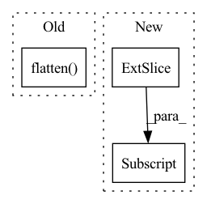

Pattern ID :2769
Before Change
def forward(self, x: torch.Tensor) -> torch.Tensor:
x = self.net(x) // batch, 512, 1, 1
// Add fc layer for final prediction
x = torch.flatten( x, start_dim=1) // batch, 512
output = F.relu(self.fc1(x)) // batch, 256
output = self.fc2(output) // batch, 64
return outputAfter Change
def forward(self, x: torch.Tensor) -> torch.Tensor:
x_l = self.net(x[:, :3, :, :]).squeeze()
x_r = self.net(x[:, 3:, :, :] ).squeeze()
x = torch.cat((x_l, x_r), dim=-1)
// Add fc layer for final prediction
output = F.relu(self.fc1(x)) // batch, 512In pattern: SUPERPATTERN
Frequency: 3
Non-data size: 3
Instances Fragment ID: 9120339
Project Name: mees/calvin
Commit Name: dc512d655e9dbaaea4f8f71529955dd9c11d5652
Time: 2021-10-26
Author: oier.mees@gmail.com
File Name: calvin/models/encoders/tactile_encoder.py
M Class Name: TactileEncoder
N Class Name: TactileEncoder
M Method Name: forward(2)
N Method Name: forward(2)
M Parent Class: nn.Module
N Parent Class: nn.Module
M File Name: calvin/models/encoders/tactile_encoder.py
N File Name: calvin/models/encoders/tactile_encoder.py
M Start Line: 22
M End Line: 24
N Start Line: 22
N End Line: 24
Before Change
// input should be (seq_len, batch, input_size)
output, h_n = self.rnn(x.unsqueeze(1))
output = self.fc(output.flatten() )
// print(output)
// return torch.mean(output, dim=0)
return outputAfter Change
st_maps = st_maps.unsqueeze(0)
for t in range(st_maps.size(1)):
with torch.no_grad():
x = self.resnet18(st_maps[:, t, :, :, :] )
// collapse dimensions to BSx512 (resnet o/p)
x = x.view(x.size(0), -1)
// output dim: BSx1 Fragment ID: 9120343
Project Name: anweshcr7/rhythmnet
Commit Name: 5486b317570359a6ab1971196350ee70894b19db
Time: 2021-02-02
Author: anwesh.marwade@beyondsports.nl
File Name: src/models/rhythmNet.py
M Class Name: RhythmNet
N Class Name: RhythmNet
M Method Name: forward(3)
N Method Name: forward(3)
M Parent Class: nn.Module
N Parent Class: nn.Module
M File Name: src/models/rhythmNet.py
N File Name: src/models/rhythmNet.py
M Start Line: 25
M End Line: 32
N Start Line: 32
N End Line: 48
Before Change
def forward(self, x: torch.Tensor) -> torch.Tensor:
x = self.net(x) // batch, 512, 1, 1
// Add fc layer for final prediction
x = torch.flatten( x, start_dim=1) // batch, 512
output = F.relu(self.fc1(x)) // batch, 256
output = self.fc2(output) // batch, 64
return outputAfter Change
def forward(self, x: torch.Tensor) -> torch.Tensor:
x_l = self.net(x[:, :3, :, :]).squeeze()
x_r = self.net(x[:, 3:, :, :] ).squeeze()
x = torch.cat((x_l, x_r), dim=-1)
// Add fc layer for final prediction
output = F.relu(self.fc1(x)) // batch, 512 Fragment ID: 9120342
Project Name: mees/calvin
Commit Name: bc70db3b8fa41fbc694ceffffd549a0f8b2afe27
Time: 2021-10-19
Author: oier.mees@gmail.com
File Name: calvin/models/encoders/tactile_encoder.py
M Class Name: TactileEncoder
N Class Name: TactileEncoder
M Method Name: forward(2)
N Method Name: forward(2)
M Parent Class: nn.Module
N Parent Class: nn.Module
M File Name: calvin/models/encoders/tactile_encoder.py
N File Name: calvin/models/encoders/tactile_encoder.py
M Start Line: 22
M End Line: 24
N Start Line: 22
N End Line: 24